La Biologia

La Caretta Caretta è una tartaruga marina di medie dimensioni, riconoscibile per il suo carapace robusto e di colore marrone-rossiccio. Si nutre principalmente di meduse, crostacei e molluschi, contribuendo all'equilibrio degli ecosistemi marini.

Dimensioni
Possono raggiungere i 110 cm di lunghezza del guscio e pesare fino a 180 kg.
Longevità
Vivono mediamente tra i 30 e i 50 anni, ma alcuni esemplari superano gli 80.
Habitat
Frequentano acque temperate e tropicali, nidificando spesso sulle coste italiane.